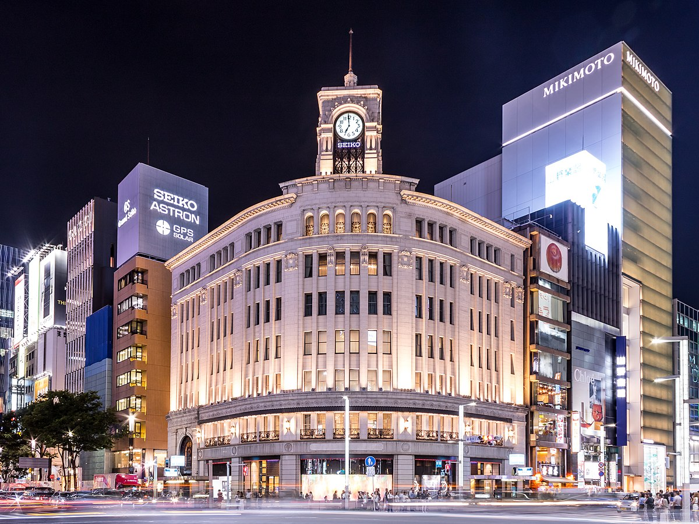

Es la capital de Japón, y la ciudad que acoge mas turistas en Japón. Es una ciudad única que combina rica tradición y
modernidad. La ciudad se caracteriza por su diversidad de distritos, desde el bullicio de "Shibuya" hasta la elegancia
de "Ginza". Los visitantes pueden disfrutar de la deliciosa comida japonesa, explorar la moda callejera en "Harajuku" y
experimentar una cultura pop vibrante. La arquitectura moderna, la eficiencia del transporte público y la seguridad
son puntos destacados. En Tokio, encontrarás una fascinante mezcla de tradición y vanguardia en una de las ciudades
más emocionantes del mundo.
Los lugares donde nos podemos hospedar serían:
Shinjuku: Uno de los distritos más populares para hospedarse en Tokio. Ofrece una amplia variedad de hoteles de
diferentes categorías, restaurantes y opciones de entretenimiento. Es un importante centro de transporte, lo que
facilita el desplazamiento por la ciudad y otras partes de Japón.
Shibuya Con su famoso cruce peatonal, Shibuya es un lugar emocionante para alojarse. Aquí encontrarás muchas
tiendas de moda, restaurantes y vida nocturna.
Asakusa: Esta área es una buena opción si quieres experimentar un ambiente más tradicional de Tokio. Está cerca del
"Templo Senso-ji" y ofrece una variedad de hoteles, desde opciones de bajo presupuesto hasta alojamientos más tradicionales
Akihabara: Si eres un entusiasta de la tecnología y la cultura pop, alojarte en Akihabara tiene
sentido. Aquí encontrarás hoteles con temática geek y estarás cerca de las tiendas de electrónica y las tiendas de anime.
Odaiba: Si te interesa la tecnología, la isla artificial de Odaiba ofrece una experiencia única. Aquí encontrarás
hoteles con vistas impresionantes de la bahía de Tokio y fácil acceso a atracciones como el Museo Miraikan y el
Gundam Unicorn.
Entre los lugares que podemos visitar destacan:
Torre de Tokio: Esta torre de comunicaciones de 333 metros de altura ofrece impresionantes vistas panorámicas de la
ciudad desde su observatorio y es un símbolo icónico de Tokio.
El cruce de Shibuya: Como he mencionado antes, es el cruce más famoso de Tokio en el que miles de personas cruzan a la vez.
Templo Senso-ji: Ubicado en el barrio de Asakusa, es el templo budista más antiguo de Tokio. El
"Kaminarimon Gate" y "Nakamise-dori" (calle comercial) que conduce al templo son destinos populares para los turistas.
Distrito de Akihabara: Conocido como el paraíso de la electrónica y la cultura pop, Akihabara es un lugar
imprescindible para los amantes de la tecnología y el manga/anime. Puedes encontrar tiendas de electrónica, tiendas
de cómics y figuras, así como cafeterías temáticas.
Ginza: Este distrito es famoso por sus tiendas de lujo y restaurantes elegantes y es conocido como la zona mas elitista y cara de Tokio. Es un gran lugar para ir de compras y disfrutar de la vida nocturna.

Parque Ueno: Este es uno de los parques más grandes de Tokio y alberga varios museos, incluido el Museo Nacional de
Tokio. Durante la temporada de sakura, el parque se llena de visitantes que realizan hanami (picnics bajo los
cerezos en flor).
Kioto:
Kioto es una histórica ciudad japonesa famosa por su rico patrimonio cultural. Destacan sus templos y santuarios,
como el Pabellón Dorado y el Santuario Fushimi Inari-taisha, así como el distrito de Gion, conocido por sus
“geishas”. La ciudad cuenta con hermosos jardines japoneses, festivales tradicionales, arquitectura antigua, comida
típica japonesa y artesanía tradicional. Kioto ofrece una experiencia única para quienes desean sumergirse en la
cultura y la historia de Japón.
Algunos lugares de interés para hospedarse son:
Centro de Kioto (Shijo-Karasuma): Esta zona es el corazón de Kioto y ofrece una gran cantidad de hoteles, hostales y
ryokans (posadas tradicionales japonesas). Estarás cerca de tiendas, restaurantes y atracciones como el Mercado
Nishiki.
Gion: Si deseas experimentar la auténtica cultura de Kioto, hospedarte en el distrito de Gion es una excelente
opción. Aquí podrías tener la oportunidad de ver geishas y maikos paseando por las calles de la zona.
Higashiyama: Esta área se encuentra cerca de muchos de los principales templos y santuarios de Kioto, como el Templo
Kiyomizu-dera. Es un lugar ideal para los interesados en la historia y la arquitectura tradicional.
Arashiyama: Ubicado al oeste de Kioto, Arashiyama es famoso por su hermoso bosque de bambú, el Templo Tenryu-ji y el Puente Togetsukyo.
Nijo Castle: Cerca del Castillo Nijo y el Palacio Imperial, esta área ofrece una experiencia tranquila y está llena de historia.
En Kioto, algunos lugares de interés serían:
Templo Kinkaku-ji (Pabellón Dorado): Este icónico templo es conocido por su pabellón cubierto de láminas de oro que
se refleja en un estanque y es de los lugares más fotografiados en Kioto.
Templo Ginkaku-ji (Pabellón de Plata): Aunque no está cubierto de plata, este templo es famoso por su arquitectura y sus hermosos jardines.
Fushimi Inari-taisha: Este santuario sintoísta es conocido por sus miles de torii rojos que forman un
impresionante pasillo. Es uno de los lugares más emblemáticos de Kioto.
Castillo Nijo: Este castillo histórico cuenta con hermosos jardines y el famoso "suelo de ruiseñor" que chirría cuando se camina sobre él.
Bosque de Bambú de Arashiyama: En esta área nombrada anteriormente, puedes caminar a través de un hermoso bosque de bambú y visitar el Templo Tenryu-ji.
Museo Internacional del Manga de Kioto: Un lugar interesante para los amantes del manga y la cultura pop japonesa.